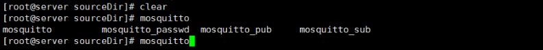
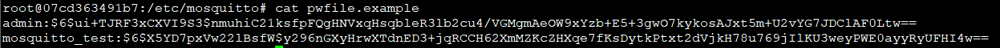
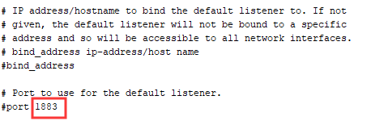
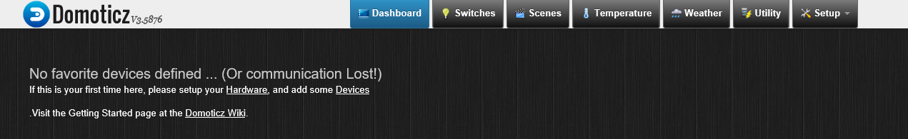
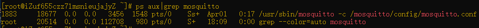
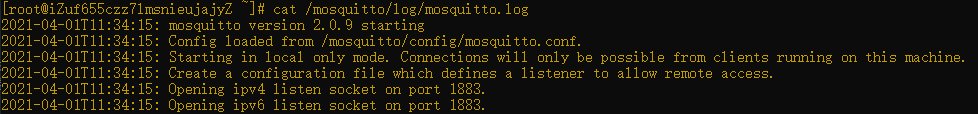
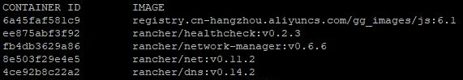
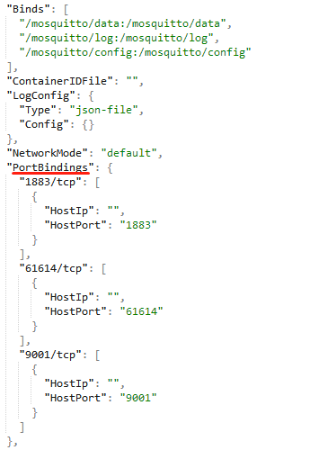

MQTT简介
MQTT（Message Queuing Telemetry Transport，消息队列遥测传输协议），是一种基于发布/订阅（publish/subscribe）模式的”轻量级”通讯协议，该协议构建于TCP/IP协议上，由IBM在1999年发布。MQTT最大优点在于，可以以极少的代码和有限的带宽，为连接远程设备提供实时可靠的消息服务。作为一种低开销、低带宽占用的即时通讯协议，使其在物联网、小型设备、移动应用等方面有较广泛的应用。
MQTT是一个基于客户端-服务器的消息发布/订阅传输协议。MQTT协议是轻量、简单、开放和易于实现的，这些特点使它适用范围非常广泛。在很多情况下，包括受限的环境中，如：机器与机器（M2M）通信和物联网（IoT）。其在，通过卫星链路通信传感器、偶尔拨号的医疗设备、智能家居、及一些小型化设备中已广泛使用。
Mosquitto简介
Mosquitto是最常用的开源MQTT实现，它实现了MQTT3.1协议的消息代理服务器（broker），提供轻量级、支持可发布/可订阅的的消息推送模式，使设备对设备之间的短消息通信变得简单，比如现在应用广泛的低功耗传感器，手机、嵌入式计算机、微型控制器等移动设备。Mosquitto由MQTT协议创始人之一的Andy Stanford-Clark开发，它为我们提供了非常棒的轻量级数据交换的解决方案。官方网站：http://mosquitto.org/ 和 github项目地址：https://github.com/eclipse/mosquitto
Domoticz简介
Domoticz是一个轻量级、开源的智能家居系统，通过它你可以监测和控制各种设备比如：灯、开关 ，各种传感器、仪表比如： 温度、雨、风、紫外线、电、气体、水 等等， 还可以向任一移动设备发送通知或警告。Domoticz支持Linux、Windows、树莓派及各种嵌入式设备。Domoticz中文站点：https://www.domoticz.cn/ 和 wiki手册
下面让我们开始一步步地搭建智能家居物联网平台吧！
更改ubuntu系统安装源
由于ubuntu系统默认使用的是国外安装源，在下载安装包过程中速度可能会比较慢，所以建议将其更改为国内安装源。
1、修改/etc/apt/sources.list文件，建议将现有的sources.list备份下。
将sources.list文件内容替换如下：
deb http://mirrors.aliyun.com/ubuntu/ bionic main restricted universe multiverse |
2、更新软件包
sudo apt-get update |
mosquitto环境搭建
搭建mosquitto环境通常有两种方式，一种是通过mosquitto源码安装部署，一种是通过docker容器化部署，下面将分别介绍这两种搭建方式。
通过下载源码安装部署
下载和安装mosquitto
1、如果你是在Linux系统上安装Mosquitto，建议大家使用源码安装，最新的源码可从http://mosquitto.org/files/source/ 获取。我这里下载的是当前最新版本：mosquitto-1.6.8。
2、下载后解压出来。这里有个需要注意的地方：默认情况下Mosquitto的安装需要OpenSSL的支持；如果不需要SSL，则需要关闭config.mk里面的某些与SSL功能有关的选项（WITH_TLS、WITH_TLS_PSK）。
3、请确保已安装make、gcc、g++、openssl等依赖包。
4、安装mosquitto：cd到mosquitto源码根目录下，执行 make install。
5、安装完毕后，会发现系统命令行里有mosquitto、mosquitto_passwd、mosquitto_pub和mosquitto_sub四个工具，分别用于启动代理服务、管理密码、发布消息和订阅消息。

mosquitto用户配置和权限管理
mosquitto支持匿名登陆和用户名登陆，在正式使用时，建议使用用户名登陆，以保证系统整体安全性。
mosquitto中可以添加多个用户，只有使用用户名和密码登陆服务器才允许用户进行订阅与发布操作。可以说用户机制是mosquitto重要的安全机制，增强服务器的安全性。
用户与权限配置需要修改3处地方：
1、mosquitto中最最最重要的配置文件mosquitto.conf
2、pwfile.example (保存用户名与密码)
3、aclfile.example (保存权限配置)
用户配置
cd到/etc/mosquitto目录下，找到mosquitto.conf.example文件，将其cp一份，名称设为mosquitto.conf，并打开该文件。
$ cd /etc/mosquitto |
1、找到allow_anonymous字段，这个字段的作用是：是否开启匿名用户登录，默认为true。打开此项配置（将前面的 # 号去掉）之后将其值改为false。
allow_anonymous false |
2、找到password_file字段，这个字段是告诉服务器你要配置的用户将存放在哪里。打开此配置并指定password_file的文件路径（注意是绝对路径）
password_file /etc/mosquitto/pwfile.example （这里的路径根据自己文件实际路径填写） |
3、找到user字段，这个字段是指当前服务器的登录用户名称，这里我使用的登录用户是root，所以需要将它的值改为root，否则在后续启动mosquitto时会报错：Error: Invalid user 'mosquitto'.
user root |
4、创建用户名和密码，此处我们来创建两个用户：admin 和 mosquitto_test。先创建admin用户，在命令行窗口输入以下命令：
mosquitto_passwd -c /etc/mosquitto/pwfile.example admin |
会提示需连续输入两次密码，创建成功。
命令解释： -c 是指创建一个用户，/etc/mosquitto/pwfile.example 是将用户创建到 pwfile.example 文件中，admin 是用户名。
再创建mosquitto_test用户，输入以下命令：
mosquitto_passwd /etc/mosquitto/pwfile.example mosquitto_test |
同样会提示需连续输入两次密码。
注意第二次创建mosquitto_test用户时不用加 -c 。如果加了 -c，则会把第一次创建的admin用户给覆盖掉。
至此，两个用户创建成功，用户信息都保存在 pwfile.example 文件中。

mosquitto_passwd命令的基本用法：
mosquitto_passwd -c：每次都只会生成只包含一个用户的文件。
用法：mosquitto_passwd -c passwordfile username
mosquitto_passwd -b：必须在控制台输入明文的密码，且每次只是在pwfile.example中新增一个用户，并不会覆盖之前已生成的用户。
用法：mosquitto_passwd -b passwordfile username password
mosquitto_passwd -D：删除一个用户。
用法：mosquitto_passwd -D passwordfile username
此时所有客户端连接 mosquitto 服务都需要输入用户名和密码。
权限管理
Mosquitto 权限是根据 topic 控制的，类似目录管理。你可以设定每个用户的订阅/发布权限，也可以设定每个用户可访问的topic范围，从而达到权限控制的目的。
1、给刚刚我们创建的两个用户配置不同的权限（假定已经创建了admin 和 mosquitto_test这两个用户）
- 将 admin 设置为订阅权限，并且只能访问的主题为”root/topic/#”
- 将 mosquitto_test 设置为发布权限，并且只能访问的主题为”root/topic/#”
这样一来，由于他们的权限不同，如果用 admin 进行发布是不会成功的，反过来用 mosquitto_test 进行订阅同样不会接受到任何信息。
2、设置权限配置文件
打开mosquitto.conf文件，找到acl_file字段，这个字段是告诉服务器你要配置的权限将存放在哪里。打开此配置并指定acl_file的文件路径（注意是绝对路径）
acl_file /etc/mosquitto/aclfile.example（这里的路径根据自己文件实际路径填写） |
3、增加权限配置（假设我们的权限配置文件是aclfile.example）
打开配置文件 aclfile.example，并添加如下配置信息：
user admin |
说明：read – 订阅权限 、write – 发布权限。
添加完毕后，保存退出。
至此 admin 、 mosquitto_test 两个用户的权限已配置完成。
mosquitto启动和停止
mosquitto默认使用的端口是1883。如果希望修改端口，则需修改mosquitto.conf文件中的 port 字段值。

一切准备就绪后，启动mosquitto：
mosquitto -c /etc/mosquitto/mosquitto.conf ##前台运行 |
停止mosquitto：使用kill命令强制终止即可。
以上内容的参考链接：
- https://www.cnblogs.com/Paul-watermelon/p/10400758.html
- https://www.cnblogs.com/saryli/p/9820532.html
通过docker容器化部署
注：应事先在机器上安装好docker环境，且保证docker已经正常启动。
查询镜像
docker search mosquitto |
选择STARS数最多的 eclipse-mosquitto
拉取镜像
docker pull eclipse-mosquitto |
查看镜像
docker images eclipse-mosquitto |
创建目录文件，用于容器目录挂载
在宿主机环境下创建目录
mkdir -p /mosquitto/config |
初始化用户密码文件
touch /mosquitto/config/pwfile.conf |
注：这里先生成一个空文件，后续会进到容器里面使用mosquitto_passwd命令来自动生成用户密码。
初始化权限管理文件
vi /mosquitto/config/aclfile.conf |
在文件中添加以下内容（此处假设会创建admin和mosquitto_test这两个用户）
user admin |
说明：read – 订阅权限 、write – 发布权限。
初始化mosquitto配置文件
vi /mosquitto/config/mosquitto.conf |
在配置文件中输入以下内容
persistence true |
添加目录权限
chmod -R 755 /mosquitto |
启动镜像
docker run -it --name=mosquitto --privileged -p 1883:1883 -p 9001:9001 -v /mosquitto/config:/mosquitto/config -v /mosquitto/data:/mosquitto/data -v /mosquitto/log:/mosquitto/log -d eclipse-mosquitto |
进入docker容器
docker exec -it mosquitto sh |
生成用户密码
使用mosquitto_passwd命令创建用户密码，第一个admin是用户名，第二个admin是密码
mosquitto_passwd -b /mosquitto/config/pwfile.conf admin admin |
重启mosquitto容器
docker restart mosquitto |
在宿主机查看mosquitto是否正常启用
查看容器是否正常重启
docker ps |

查看mosquitto服务是否正常启动
ps aux |grep mosquitto |

查看mosquitto服务运行日志
cat /mosquitto/log/mosquitto.log |

至此，mosquitto环境就搭建完成了。我们知道，单单只有一个broker是不行的，我们还需要一个可以进行家居控制的工具，接下来我们开始搭建这个可视化的工具Domoticz。
domoticz环境搭建
本文开头简单介绍了domoticz是个啥东东，其中说到了domoticz支持linux系统。经本人亲身测试，domoticz在centos系统上支持的不是很好，比如在安装domoticz的时候，centos系统无法使用命令curl -L install.domoticz.cn | bash来一键式安装domoticz，不会出现所谓的安装界面。所以最终选择在ubuntu 18.04 64系统上安装domoticz，总的来说，domoticz在ubuntu系统上的适配做的比较好。
安装domoticz通常有两种方式：一种是直接通过命令行安装，一种是下载源码后，编译源码来安装。网上大多数安装教程介绍的是通过命令行来安装，参考链接：https://blog.csdn.net/why19940926/article/details/88372645，下面重点介绍通过编译源码来安装domoticz。
下载源码
假定你已经更改了ubuntu系统安装源，并已经更新了系统软件包。
当前最新稳定版是v4.10717，但有人说最新版不是很稳定，推荐使用v3.8153。
为保险起见，这里使用了某人推荐的v3.8153版本（v3.0系列的最后一个稳定版本），下载地址如下：
https://github.com/domoticz/domoticz/tree/3.8153
安装相关依赖库和工具
apt-get install build-essential nano cmake git libboost-dev libboost-thread-dev libboost-system-dev |
编译源码
cd到domoticz源码根目录下，输入以下命令：
cmake -DCMAKE_BUILD_TYPE=Release . |
说明：在低配电脑上进行编译可能需要10-15分钟。如果你的电脑拥有多核CPU，可以通过给make命令增加’-j’标识来使用更多核心，这样会快很多。四核CPU可以使用make -j4代替make。
启动domoticz
cd到domoticz源码根目录下，输入以下命令：
./domoticz |
然后在浏览器中输入IP:8080即可访问domoticz的Web控制界面，会发现Web前端的版本号是v3.5876，而本次下载的domoticz源码版本号是v3.8153，注意不要把这两者弄混淆了。

说明：domoticz默认使用的端口是8080，如果需要更改端口号，可在启动domoticz时，使用参数 -www 来指定端口号，如：./domoticz -www 8090
还可通过命令./domoticz -h来查看详细用法。
以上内容的参考链接：
搭建过程中的常用工具
查看系统端口被占用情况
使用netstat命令查看端口占用情况：
apt-get install net-tools ##安装netstat |
各参数说明：
- -t (tcp) 仅显示tcp相关选项
- -u (udp)仅显示udp相关选项
- -n 拒绝显示别名，能显示数字的全部转化为数字
- -l 仅列出在Listen(监听)的服务状态
- -p 显示建立相关链接的程序名
例如查看 8000 端口的情况，使用以下命令：
netstat -nultp | grep 8000 |
如何对正在运行的docker容器增加端口映射
通常在docker run创建并运行容器的时候，可以通过-p指定端口映射规则。但是，我们经常会遇到刚开始忘记设置端口映射或者设置错了需要修改。当docker start运行容器后并没有提供一个-p选项或设置，让你来修改指定端口映射规则。那么这种情况我们该怎么处理呢？
方法一：删掉当前的容器，重新创建一个新容器（加上新的端口映射）。
优缺点：优点是简单快捷，在测试环境使用较多。缺点是如果是数据库镜像，那重新建一个又要重新配置一次，就比较麻烦了。
方法二：修改容器配置文件，重启docker服务。
优缺点：优点是没有副作用，操作简单。缺点是需要重启整个docker服务，如果在同一个宿主机上运行着多个容器服务的话，就会影响其他容器服务。
具体方法如下：
1、利用docker ps命令查看当前容器的CONTAINER ID，一般只会显示出该ID的一部分内容。

2、打开hostconfig.json文件，文件路径是：/var/lib/docker/containers/[CONTAINER ID]/hostconfig.json。

该json文件中有一个节点是PortBindings，这里面包含所有的映射端口内容，只需在这里面新增相应的端口映射即可。例如：1883/tcp对应的是容器内部的1883端口，HostPort对应的是映射到宿主机的端口1883。按需新增/修改端口后，使用命令systemctl restart docker重启docker服务，再启动相应容器就可以了。
方法三：利用docker commit构建一个新镜像，再创建一个新容器。
优缺点：优点是不会影响宿主机上的其他容器，缺点是管理起来显得比较混乱，总体来说没有第二种方法那么直观。